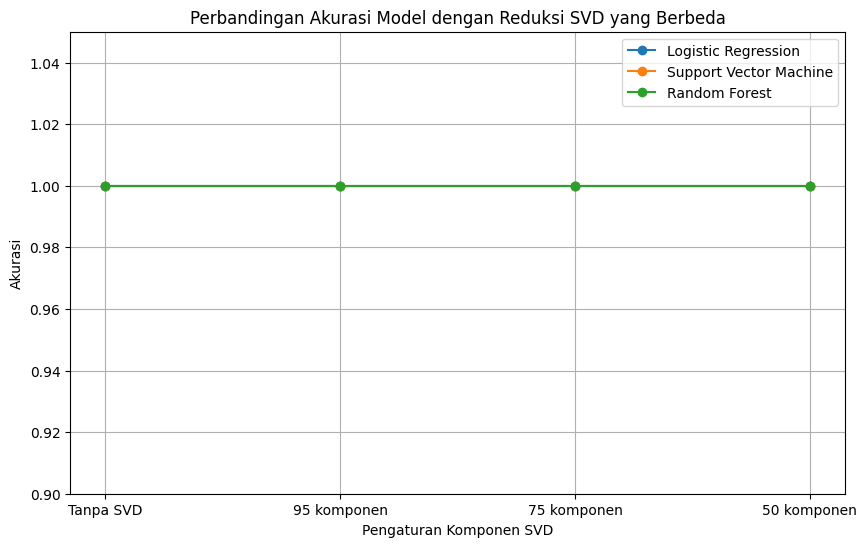

import pandas as pd
from sklearn.model_selection import train_test_split
from sklearn.feature_extraction.text import TfidfVectorizer
from sklearn.linear_model import LogisticRegression
from sklearn.svm import SVC
from sklearn.ensemble import RandomForestClassifier
from sklearn.decomposition import TruncatedSVD
from sklearn.metrics import accuracy_score
import matplotlib.pyplot as plt
import pickle
import re
import nltk
from Sastrawi.Stemmer.StemmerFactory import StemmerFactory
from nltk.corpus import stopwords
!pip install Sastrawi
Requirement already satisfied: Sastrawi in /usr/local/lib/python3.10/dist-packages (1.0.1)
from google.colab import drive
drive.mount('/content/drive')
---------------------------------------------------------------------------
KeyboardInterrupt Traceback (most recent call last)
<ipython-input-3-d5df0069828e> in <cell line: 2>()
1 from google.colab import drive
----> 2 drive.mount('/content/drive')
/usr/local/lib/python3.10/dist-packages/google/colab/drive.py in mount(mountpoint, force_remount, timeout_ms, readonly)
98 def mount(mountpoint, force_remount=False, timeout_ms=120000, readonly=False):
99 """Mount your Google Drive at the specified mountpoint path."""
--> 100 return _mount(
101 mountpoint,
102 force_remount=force_remount,
/usr/local/lib/python3.10/dist-packages/google/colab/drive.py in _mount(mountpoint, force_remount, timeout_ms, ephemeral, readonly)
135 )
136 if ephemeral:
--> 137 _message.blocking_request(
138 'request_auth',
139 request={'authType': 'dfs_ephemeral'},
/usr/local/lib/python3.10/dist-packages/google/colab/_message.py in blocking_request(request_type, request, timeout_sec, parent)
174 request_type, request, parent=parent, expect_reply=True
175 )
--> 176 return read_reply_from_input(request_id, timeout_sec)
/usr/local/lib/python3.10/dist-packages/google/colab/_message.py in read_reply_from_input(message_id, timeout_sec)
94 reply = _read_next_input_message()
95 if reply == _NOT_READY or not isinstance(reply, dict):
---> 96 time.sleep(0.025)
97 continue
98 if (
KeyboardInterrupt:
cd /content/drive/MyDrive/PPW/tugas
/content/drive/MyDrive/PPW/tugas
Load Data#
df = pd.read_csv("Tugas-Crawling-Data-Berita-2-kategori.csv")
df
| NO | Judul Berita | Isi Berita | Tanggal Berita | Kategori Berita | |
|---|---|---|---|---|---|
| 0 | 1 | Analisis PPI: Di Tangan Presiden Prabowo, Indo... | TIMESINDONESIA, JAKARTA – Di bawah kepemimpina... | 04/09/2024 - 23:35 | Politik |
| 1 | 2 | Bacawabup Lathifah Solidkan Seribu Relawan, Si... | TIMESINDONESIA, MALANG – Bakal cawabup Malang,... | 04/09/2024 - 22:02 | Politik |
| 2 | 3 | Rois Syuriah Sebut Visi Misi Untoro-Wahyudi Se... | TIMESINDONESIA, BANTUL – Rois Syuriah PCNU Ban... | 04/09/2024 - 20:54 | Politik |
| 3 | 4 | Ribuan Kader PKB Kabupaten Mojokerto Panasi Me... | TIMESINDONESIA, MOJOKERTO – Ribuan kader PKB K... | 04/09/2024 - 19:23 | Politik |
| 4 | 5 | Wajah Pengurus Inti DPP PKB Tidak Berubah, Ini... | TIMESINDONESIA, JAKARTA – Partai Kebangkitan B... | 04/09/2024 - 16:43 | Politik |
| ... | ... | ... | ... | ... | ... |
| 95 | 96 | Azquira Scarf Luncurkan Hijab Autentik dengan ... | TIMESINDONESIA, MALANG – Azquira Scarf menggel... | 01/09/2024 - 22:42 | Gaya Hidup |
| 96 | 97 | Mengulik Sejarah Bangunan Heritage Kota Malang... | TIMESINDONESIA, MALANG – Pada Minggu (1/9/2024... | 01/09/2024 - 22:16 | Gaya Hidup |
| 97 | 98 | Ritual Wewangian, Parfum Lokal Jadi Pilihan In... | TIMESINDONESIA, SURABAYA – Memilih wewangian p... | 31/08/2024 - 20:04 | Gaya Hidup |
| 98 | 99 | Berkeliling Nusantara Melalui Suguhan Kuliner ... | TIMESINDONESIA, MAGELANG – Anda ingin mencicip... | 04/09/2024 - 17:00 | Gaya Hidup |
| 99 | 100 | Mengenal Tauco: Bumbu Fermentasi Kaya Rasa dan... | TIMESINDONESIA, JAKARTA – Tauco adalah salah s... | 04/09/2024 - 02:03 | Gaya Hidup |
100 rows × 5 columns
Data setelah Preprosessing#
Preprosesing yang dilakukan :
Label Encoder
Cleaning
Case Folding
Tokenize
Stop Word Removal
Stemming
df_prep = pd.read_csv("/content/drive/MyDrive/PPW/tugas/data-preprosesing(klasifikasiberita).csv")
df_prep
| NO | Judul Berita | Isi Berita | Tanggal Berita | Kategori Berita | Kategori | cleansing | case_folding | tokenize | stopword_removal | stemming | |
|---|---|---|---|---|---|---|---|---|---|---|---|
| 0 | 1 | Analisis PPI: Di Tangan Presiden Prabowo, Indo... | TIMESINDONESIA, JAKARTA – Di bawah kepemimpina... | 04/09/2024 - 23:35 | Politik | 0 | TIMESINDONESIA JAKARTA Di bawah kepemimpinan ... | timesindonesia jakarta di bawah kepemimpinan ... | ['timesindonesia', 'jakarta', 'di', 'bawah', '... | timesindonesia jakarta kepemimpinan presiden r... | timesindonesia jakarta pimpin presiden ri prab... |
| 1 | 2 | Bacawabup Lathifah Solidkan Seribu Relawan, Si... | TIMESINDONESIA, MALANG – Bakal cawabup Malang,... | 04/09/2024 - 22:02 | Politik | 0 | TIMESINDONESIA MALANG Bakal cawabup Malang La... | timesindonesia malang bakal cawabup malang la... | ['timesindonesia', 'malang', 'bakal', 'cawabup... | timesindonesia malang cawabup malang lathifah ... | timesindonesia malang cawabup malang lathifah ... |
| 2 | 3 | Rois Syuriah Sebut Visi Misi Untoro-Wahyudi Se... | TIMESINDONESIA, BANTUL – Rois Syuriah PCNU Ban... | 04/09/2024 - 20:54 | Politik | 0 | TIMESINDONESIA BANTUL Rois Syuriah PCNU Bantu... | timesindonesia bantul rois syuriah pcnu bantu... | ['timesindonesia', 'bantul', 'rois', 'syuriah'... | timesindonesia bantul rois syuriah pcnu bantul... | timesindonesia bantul rois syuriah pcnu bantul... |
| 3 | 4 | Ribuan Kader PKB Kabupaten Mojokerto Panasi Me... | TIMESINDONESIA, MOJOKERTO – Ribuan kader PKB K... | 04/09/2024 - 19:23 | Politik | 0 | TIMESINDONESIA MOJOKERTO Ribuan kader PKB Kab... | timesindonesia mojokerto ribuan kader pkb kab... | ['timesindonesia', 'mojokerto', 'ribuan', 'kad... | timesindonesia mojokerto ribuan kader pkb kabu... | timesindonesia mojokerto ribu kader pkb kabupa... |
| 4 | 5 | Wajah Pengurus Inti DPP PKB Tidak Berubah, Ini... | TIMESINDONESIA, JAKARTA – Partai Kebangkitan B... | 04/09/2024 - 16:43 | Politik | 0 | TIMESINDONESIA JAKARTA Partai Kebangkitan Ban... | timesindonesia jakarta partai kebangkitan ban... | ['timesindonesia', 'jakarta', 'partai', 'keban... | timesindonesia jakarta partai kebangkitan bang... | timesindonesia jakarta partai bangkit bangsa p... |
| ... | ... | ... | ... | ... | ... | ... | ... | ... | ... | ... | ... |
| 95 | 96 | Azquira Scarf Luncurkan Hijab Autentik dengan ... | TIMESINDONESIA, MALANG – Azquira Scarf menggel... | 01/09/2024 - 22:42 | Gaya Hidup | 1 | TIMESINDONESIA MALANG Azquira Scarf menggelar... | timesindonesia malang azquira scarf menggelar... | ['timesindonesia', 'malang', 'azquira', 'scarf... | timesindonesia malang azquira scarf menggelar ... | timesindonesia malang azquira scarf gelar acar... |
| 96 | 97 | Mengulik Sejarah Bangunan Heritage Kota Malang... | TIMESINDONESIA, MALANG – Pada Minggu (1/9/2024... | 01/09/2024 - 22:16 | Gaya Hidup | 1 | TIMESINDONESIA MALANG Pada Minggu 192024 komu... | timesindonesia malang pada minggu 192024 komu... | ['timesindonesia', 'malang', 'pada', 'minggu',... | timesindonesia malang minggu 192024 komunitas ... | timesindonesia malang minggu 192024 komunitas ... |
| 97 | 98 | Ritual Wewangian, Parfum Lokal Jadi Pilihan In... | TIMESINDONESIA, SURABAYA – Memilih wewangian p... | 31/08/2024 - 20:04 | Gaya Hidup | 1 | TIMESINDONESIA SURABAYA Memilih wewangian pen... | timesindonesia surabaya memilih wewangian pen... | ['timesindonesia', 'surabaya', 'memilih', 'wew... | timesindonesia surabaya memilih wewangian peng... | timesindonesia surabaya pilih wewangian harum ... |
| 98 | 99 | Berkeliling Nusantara Melalui Suguhan Kuliner ... | TIMESINDONESIA, MAGELANG – Anda ingin mencicip... | 04/09/2024 - 17:00 | Gaya Hidup | 1 | TIMESINDONESIA MAGELANG Anda ingin mencicipi ... | timesindonesia magelang anda ingin mencicipi ... | ['timesindonesia', 'magelang', 'anda', 'ingin'... | timesindonesia magelang mencicipi kenikmatan s... | timesindonesia magelang cicip nikmat deret kul... |
| 99 | 100 | Mengenal Tauco: Bumbu Fermentasi Kaya Rasa dan... | TIMESINDONESIA, JAKARTA – Tauco adalah salah s... | 04/09/2024 - 02:03 | Gaya Hidup | 1 | TIMESINDONESIA JAKARTA Tauco adalah salah sat... | timesindonesia jakarta tauco adalah salah sat... | ['timesindonesia', 'jakarta', 'tauco', 'adalah... | timesindonesia jakarta tauco salah bumbu tradi... | timesindonesia jakarta tauco salah bumbu tradi... |
100 rows × 11 columns
# x = df_prep['stemming'].values
# y = df_prep['Kategori'].values
# Xtrain, Xtest,Ytrain,Ytest = train_test_split(x,y,test_size=0.2,random_state=2)
TF-IDF#
# # Inisialisasi TfidfVectorizer
# vect = TfidfVectorizer()
# # Fitting dan transformasi data pelatihan (mengajarkan model tentang kata-kata di Xtrain dan menghitung TF-IDF)
# X = vect.fit_transform(Xtrain)
# # Mengonversi Xtrain menjadi representasi TF-IDF
# X_array = vect.transform(Xtrain)
# Mengubah matriks menjadi array
X_array.toarray()
array([[0. , 0. , 0. , ..., 0. , 0. ,
0.08404587],
[0. , 0. , 0. , ..., 0. , 0. ,
0.08404587],
[0. , 0. , 0. , ..., 0. , 0. ,
0. ],
...,
[0. , 0. , 0. , ..., 0. , 0. ,
0. ],
[0. , 0. , 0. , ..., 0. , 0. ,
0. ],
[0. , 0. , 0. , ..., 0. , 0. ,
0. ]])
Modeling#
Model yang digunakan:
Logistic Regression
Support Vector Machine
Random Forest
Multinomial Naive Bayes
# Memuat dataset
df_prep = pd.read_csv('/content/drive/MyDrive/PPW/tugas/data-preprosesing(klasifikasiberita).csv')
# Mendefinisikan fitur dan variabel target
x = df_prep['stemming'].values
y = df_prep['Kategori'].values
# Membagi data menjadi set pelatihan dan pengujian
X_train_raw, X_test_raw, y_train, y_test = train_test_split(x, y, test_size=0.2, random_state=2)
# Transformasi TF-IDF
tfidf_vectorizer = TfidfVectorizer()
X_train_tfidf = tfidf_vectorizer.fit_transform(X_train_raw)
X_test_tfidf = tfidf_vectorizer.transform(X_test_raw) #ditransformasikan menggunakan transformasi yang sama (berdasarkan fit dari data pelatihan).
# Menyimpan TF-IDF vectorizer ke dalam file PKL
with open('tfidf_vectorizer.pkl', 'wb') as file:
pickle.dump(tfidf_vectorizer, file)
# Model yang akan dievaluasi
models = {
'Logistic Regression': LogisticRegression(),
'Support Vector Machine': SVC(),
'Random Forest': RandomForestClassifier()
}
# Komponen SVD untuk reduksi dimensi
svd_components = [None, 95, 75, 50]
# Menyimpan hasil
results = {model_name: [] for model_name in models.keys()}
model_files = {}
# Melatih dan mengevaluasi setiap model dengan pengaturan SVD yang berbeda
for n_components in svd_components:
# Menerapkan SVD jika n_components ditentukan
if n_components:
svd = TruncatedSVD(n_components=n_components, random_state=2)
X_train = svd.fit_transform(X_train_tfidf)
X_test = svd.transform(X_test_tfidf)
# Simpan objek SVD
svd_filename = f'/content/drive/MyDrive/PPW/tugas/svd_{n_components}.pkl'
with open(svd_filename, 'wb') as file:
pickle.dump(svd, file)
else:
X_train, X_test = X_train_tfidf, X_test_tfidf
# Melatih dan menyimpan setiap model
for model_name, model in models.items():
model.fit(X_train, y_train)
y_pred = model.predict(X_test)
accuracy = accuracy_score(y_test, y_pred)
# Menyimpan akurasi model
results[model_name].append(accuracy)
# Menyimpan model yang telah dilatih ke file PKL
model_filename = f'/content/drive/MyDrive/PPW/tugas/{model_name.replace(" ", "_").lower()}_svd_{n_components}.pkl'
with open(model_filename, 'wb') as file:
pickle.dump(model, file)
model_files[f"{model_name} (SVD={n_components})"] = model_filename
# Membuat plot perbandingan akurasi
component_labels = ['Tanpa SVD', '95 komponen', '75 komponen', '50 komponen']
plt.figure(figsize=(10, 6))
for model_name, accuracies in results.items():
plt.plot(component_labels, accuracies, marker='o', label=model_name)
plt.title('Perbandingan Akurasi Model dengan Reduksi SVD yang Berbeda')
plt.xlabel('Pengaturan Komponen SVD')
plt.ylabel('Akurasi')
plt.ylim(0.9, 1.05)
plt.legend()
plt.grid(True)
plt.show()
model_files

{'Logistic Regression (SVD=None)': '/content/drive/MyDrive/PPW/tugas/logistic_regression_svd_None.pkl',
'Support Vector Machine (SVD=None)': '/content/drive/MyDrive/PPW/tugas/support_vector_machine_svd_None.pkl',
'Random Forest (SVD=None)': '/content/drive/MyDrive/PPW/tugas/random_forest_svd_None.pkl',
'Logistic Regression (SVD=95)': '/content/drive/MyDrive/PPW/tugas/logistic_regression_svd_95.pkl',
'Support Vector Machine (SVD=95)': '/content/drive/MyDrive/PPW/tugas/support_vector_machine_svd_95.pkl',
'Random Forest (SVD=95)': '/content/drive/MyDrive/PPW/tugas/random_forest_svd_95.pkl',
'Logistic Regression (SVD=75)': '/content/drive/MyDrive/PPW/tugas/logistic_regression_svd_75.pkl',
'Support Vector Machine (SVD=75)': '/content/drive/MyDrive/PPW/tugas/support_vector_machine_svd_75.pkl',
'Random Forest (SVD=75)': '/content/drive/MyDrive/PPW/tugas/random_forest_svd_75.pkl',
'Logistic Regression (SVD=50)': '/content/drive/MyDrive/PPW/tugas/logistic_regression_svd_50.pkl',
'Support Vector Machine (SVD=50)': '/content/drive/MyDrive/PPW/tugas/support_vector_machine_svd_50.pkl',
'Random Forest (SVD=50)': '/content/drive/MyDrive/PPW/tugas/random_forest_svd_50.pkl'}
Implementasi User#
# Preprocessing functions
# Cleaning
def remove_symbols(data_berita):
data_berita = re.sub(r'[^a-zA-Z0-9\s]', '', data_berita) # Menghapus karakter yang tidak diinginkan
return data_berita
# Case Folding
def case_folding(text):
if isinstance(text, str):
return text.lower() # Mengubah teks menjadi huruf kecil
return text
# Tokenizing
def tokenize(text):
tokens = text.split() # Memecah teks menjadi token (kata-kata)
return tokens
# Stopword Removal
nltk.download('stopwords')
stop_words = stopwords.words('indonesian')
def remove_stopwords(text):
return [word for word in text if word not in stop_words] # Menghapus stopwords
# Stemming
factory = StemmerFactory()
stemmer = factory.create_stemmer()
def stemming(text):
return [stemmer.stem(word) for word in text] # Melakukan stemming
[nltk_data] Downloading package stopwords to /root/nltk_data...
[nltk_data] Package stopwords is already up-to-date!
def preprocess_user_input(berita):
# Step by step preprocessing
cleaned = remove_symbols(berita)
folded = case_folding(cleaned)
tokenized = tokenize(folded)
no_stopwords = remove_stopwords(tokenized)
stemmed = stemming(no_stopwords)
# Gabungkan kembali menjadi teks setelah stemming
preprocessed_text = ' '.join(stemmed)
return preprocessed_text
import pickle
# Memuat TF-IDF Vectorizer
with open('tfidf_vectorizer.pkl', 'rb') as file:
tfidf_vectorizer = pickle.load(file)
# Fungsi untuk memuat model yang diinginkan
def load_model(model_filename):
with open(model_filename, 'rb') as file:
model = pickle.load(file)
return model
def predict_category(berita, model_filename, svd_filename=None):
# Preprocessing input user
preprocessed_berita = preprocess_user_input(berita)
# Transformasi TF-IDF
tfidf_berita = tfidf_vectorizer.transform([preprocessed_berita])
# Jika ada reduksi dimensi (SVD), terapkan SVD
if svd_filename:
with open(svd_filename, 'rb') as file:
svd = pickle.load(file)
tfidf_berita = svd.transform(tfidf_berita)
# Memuat model yang dipilih user
model = load_model(model_filename)
# Prediksi kategori
predicted_category = model.predict(tfidf_berita)
return predicted_category[0] # Mengembalikan hasil prediksi
# Input berita dari user
input_berita = input("Masukkan isi berita yang ingin diprediksi kategorinya: ")
# Pilihan model oleh user
print("Pilih model untuk prediksi:")
print("1. Logistic Regression")
print("2. Support Vector Machine (SVM)")
print("3. Random Forest")
model_option = input("Masukkan pilihan model (1/2/3): ")
if model_option == '1':
model_choice = "logistic_regression"
elif model_option == '2':
model_choice = "svm"
elif model_option == '3':
model_choice = "random_forest"
else:
print("Pilihan tidak valid. Menggunakan Logistic Regression sebagai default.")
model_choice = "logistic_regression"
# Pilihan komponen SVD oleh user
print("Pilih jumlah komponen SVD untuk reduksi dimensi:")
print("1. Tanpa SVD")
print("2. 95 komponen")
print("3. 75 komponen")
print("4. 50 komponen")
svd_option = input("Masukkan pilihan komponen SVD (1/2/3/4): ")
if svd_option == '1':
svd_components = None
elif svd_option == '2':
svd_components = 95
elif svd_option == '3':
svd_components = 75
elif svd_option == '4':
svd_components = 50
else:
print("Pilihan tidak valid. Tidak menggunakan SVD sebagai default.")
svd_components = None
# Path model dan SVD sesuai pilihan
model_filename = f'/content/drive/MyDrive/PPW/tugas/{model_choice}_svd_{svd_components}.pkl'
svd_filename = None if svd_components is None else f'/content/drive/MyDrive/PPW/tugas/svd_{svd_components}.pkl'
# Prediksi kategori
predicted_category = predict_category(input_berita, model_filename, svd_filename)
# Tampilkan hasil prediksi
print(f"Kategori prediksi untuk berita tersebut adalah: {predicted_category}")
Masukkan isi berita yang ingin diprediksi kategorinya: TIMESINDONESIA, JEMBER – Sebanyak 142 barista dari berbagai daerah mengikuti Pandhalungan Coffee Week 2024 yang berlangsung di Main Atrium GF Lippo Plaza Jember, Jember, Jawa Timur (Jatim). Pandhalungan Coffee Week yang pertama kali digelar pada 2023 tersebut menjadi ajang berbagi cerita dan promosi bagi pecinta kopi Nusantara serta pelaku usaha yang tidak jauh dari biji kopi. "Jadi pada awalnya berdiri kegiatan ini di tahun 2023 itu hanya segmented untuk kopi. Kemudian pada tahun ini kami menginisiasi bahwa spektrumnya kami perluas," kata Resty Subagio selaku Ketua Panitia Pandhalungan Coffee Week saat ditemui di Lippo Plaza Jember, Sabtu (12/10/2024). Resty mengatakan, Jember merupakan kabupaten yang dikenal sebagai salah satu penghasil kopi terbaik di Indonesia, khususnya kopi robusta. Namun, dia menyatakan bahwa perhatian terhadap potensi kopi di Jember masih kurang. "Harapannya setelah ada klaim seperti itu, kami ingin punya banyak acara yang dapat mengangkat kopi itu sendiri. Jadi tahun ini kami angkat semua, baik itu coffee shop, ada teman-teman komunitas, dan juga ada pengusaha," ujarnya. Resty juga mengatakan bahwa kegiatan tersebut juga merangkul penjaja kopi keliling agar dapat mempromosikan usahanya ke publik. "Ada juga teman-teman yang memang UMKM seperti kopi keliling untuk berkolaborasi," tambahnya. Untuk diketahui, Pandhalungan Coffee Week berlangsung selama tiga hari yakni 11 - 13 Oktober 2024. Sementara itu, Marlina Elisabeth Panjaitan, Dep Head Marketing Communications Lippo Plaza Jember mengatakan bahwa pihaknya mendukung Pandhalungan Coffee Week tersebut. Menurutnya, acara tersebut akan berdampak positif bagi pengusaha kopi lokal yang ada di Jember dan sekitarnya. "Acara ini tentunya dapat menjadi ajang promosi dan membuka peluang kerja sama bagi para pengusaha kopi, kafe dan industri food and beverages dan Lippo sangat bangga bisa turut mendukung kegiatan ini," kata perempuan yang akrab disapa Lina tersebut. Tidak hanya itu, Lina mengatakan bahwa masyarakat umum juga dapat mengenali potensi kopi lokal serta industrinya. "Tentunya ini membuat kami semakin mengenal dan mengerti industri kopi dan kebutuhan komunitasnya, serta membawa dampak yang baik bagi para pengunjung Lippo karena mungkin mereka belum berkesempatan untuk mencicipi produk-produk dalam pameran ini. Tapi kini pengunjung bisa menikmati ini selama penyelenggaraan Pandhalungan Coffee Week," imbuhnya.
Pilih model untuk prediksi:
1. Logistic Regression
2. Support Vector Machine (SVM)
3. Random Forest
Masukkan pilihan model (1/2/3): 1
Pilih jumlah komponen SVD untuk reduksi dimensi:
1. Tanpa SVD
2. 95 komponen
3. 75 komponen
4. 50 komponen
Masukkan pilihan komponen SVD (1/2/3/4): 3
Kategori prediksi untuk berita tersebut adalah: 1